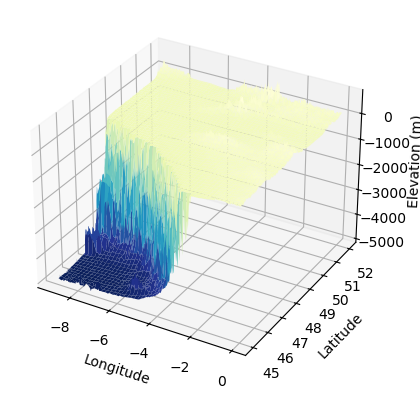

Visualize bathymetry with pyvista
pip install 'pyvista[all]' pyvista-xarray geovista trame trame-vtk trame-vuetify
import matplotlib.pyplot as plt
import pyvista as pv
import xarray as xr
import numpy as np
import s3fs
fs = s3fs.S3FileSystem(
anon=False,
profile="gfts",
client_kwargs={
"endpoint_url": "https://s3.gra.perf.cloud.ovh.net",
"region_name": "gra",
},
)
Read Gridded Bathymetry Data
Gridded ba from https://www.gebco.net/data_and_products/gridded_bathymetry_data/
gfts_url = "s3://gfts-reference-data/GEBCO_2023_sub_ice_topo.nc"
dset = xr.open_dataset(fs.open(gfts_url))
dset
<xarray.Dataset> Size: 7GB
Dimensions: (lon: 86400, lat: 43200)
Coordinates:
* lon (lon) float64 691kB -180.0 -180.0 -180.0 ... 180.0 180.0 180.0
* lat (lat) float64 346kB -90.0 -89.99 -89.99 ... 89.99 89.99 90.0
Data variables:
elevation (lat, lon) int16 7GB ...
Attributes:
Conventions: CF-1.6
title: The GEBCO_2020 Grid - a continuous terrain model for oceans...
institution: On behalf of the General Bathymetric Chart of the Oceans (G...
source: The GEBCO_2020 Grid is the latest global bathymetric produc...
history: Information on the development of the data set and the sour...
references: DOI: 10.5285/836f016a-33be-6ddc-e053-6c86abc0788e
comment: The data in the GEBCO_2020 Grid should not be used for navi...
node_offset: 1.0bbox = {"latitude": [45, 52], "longitude": [-9, 0]}
dset_area = dset.where(
(dset.lat >= bbox["latitude"][0])
& (dset.lat <= bbox["latitude"][1])
& (dset.lon >= bbox["longitude"][0])
& (dset.lon <= bbox["longitude"][1]),
drop=True,
)
dset_area
<xarray.Dataset> Size: 15MB
Dimensions: (lat: 1680, lon: 2160)
Coordinates:
* lon (lon) float64 17kB -8.998 -8.994 -8.99 ... -0.00625 -0.002083
* lat (lat) float64 13kB 45.0 45.01 45.01 45.01 ... 51.99 51.99 52.0
Data variables:
elevation (lat, lon) float32 15MB -4.897e+03 -4.9e+03 ... 143.0 114.0
Attributes:
Conventions: CF-1.6
title: The GEBCO_2020 Grid - a continuous terrain model for oceans...
institution: On behalf of the General Bathymetric Chart of the Oceans (G...
source: The GEBCO_2020 Grid is the latest global bathymetric produc...
history: Information on the development of the data set and the sour...
references: DOI: 10.5285/836f016a-33be-6ddc-e053-6c86abc0788e
comment: The data in the GEBCO_2020 Grid should not be used for navi...
node_offset: 1.03D Visualisation with matplotlib
fig = plt.figure()
ax = fig.add_subplot(projection="3d")
# Creating data
x = dset_area.lon.values
y = dset_area.lat.values
Z = dset_area.elevation.values
X, Y = np.meshgrid(x, y)
# Plot the surface.
ax.plot_surface(X, Y, Z, cmap=plt.cm.YlGnBu_r)
# Tweak the limits and add latex math labels.
ax.set_xlabel(r"Longitude")
ax.set_ylabel(r"Latitude")
ax.set_zlabel(r"Elevation (m)")
plt.show()

Interactive visualisation with pyVista
pv.start_xvfb()
dset_area.where(dset_area.elevation < 0).elevation.pyvista.plot(
x="lon", y="lat", show_edges=False, cpos="xy"
)
Interactive 3D visualisation with pyvista
# Create and plot structured grid
grid = pv.StructuredGrid(X, Y, Z)
plotter = pv.Plotter()
plotter.add_mesh(
grid,
scalars=grid.points[:, -1],
show_edges=False,
scalar_bar_args={"vertical": False},
)
plotter.set_scale(zscale=0.001)
plotter.camera_position = "xy"
plotter.show()